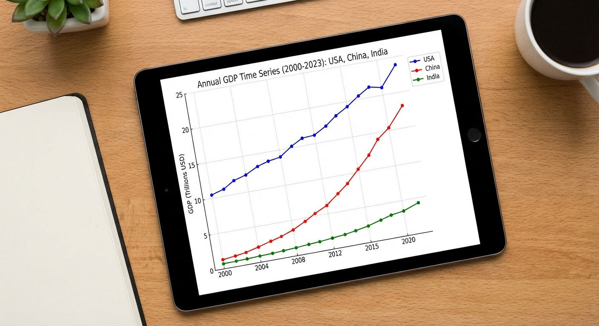

Topic 3
GDP Time Series for Multiple Countries
Easy → Medium

Topic 3 – GDP Time Series for Multiple Countries (Kaggle)
Level: Easy → Medium Goal: Forecast annual GDP for 1–3 countries, compare trends and growth.Dataset
- Source: GDP Timeseries Data for various Countries – Kaggle
- Link: https://www.kaggle.com/datasets/iamtushara/gdp-timeseries-data-for-various-countries
Download Instructions
- Open the dataset link above.
- Click "Download".
- Extract to
data/. - Use the main GDP CSV (e.g.
gdp_timeseries.csv).
Data Loading
import pandas as pd
df = pd.read_csv("data/gdp_timeseries.csv") # adjust filename
country = df[df["Country"] == "Vietnam"].copy() # example filter
country["Year"] = pd.to_datetime(country["Year"], format="%Y")
country = country.set_index("Year").sort_index()Implementation Steps
1. Data Exploration
- Load dataset and explore structure
- Select 1-3 countries for analysis (e.g., Vietnam, USA, China)
- Inspect GDP values and time range
- Check for missing values and data quality
2. Exploratory Data Analysis (EDA)
- Plot GDP time series for each country
- Compare trends across countries (side-by-side plots)
- Calculate growth rates (year-over-year, CAGR)
- Identify structural breaks or regime changes
- Perform time series decomposition
3. Stationarity Analysis
- Test each country's GDP series for stationarity (ADF test)
- Apply differencing if needed (GDP is typically non-stationary)
- Consider log transformation for variance stabilization
- Check for unit roots
4. Model Building
- Univariate Models (per country):
- ARIMA models
- Consider trend models if strong deterministic trend
- Comparative Analysis:
- Compare model performance across countries
- Identify common patterns or differences
- Advanced (optional):
- VAR models for multivariate analysis
- Cointegration tests if analyzing multiple countries together
5. Model Evaluation
- Split data temporally (e.g., last 5-10 years as test set)
- Generate forecasts for each country
- Calculate metrics: MAE, RMSE, MAPE
- Compare forecast accuracy across countries
- Visualize forecasts with confidence intervals
6. Comparative Analysis
- Compare GDP growth trends
- Analyze forecast accuracy differences
- Discuss economic factors affecting each country
- Generate comparative forecast plots
Expected Deliverables
- EDA Report:
- GDP plots for each country
- Growth rate analysis
- Comparative visualizations
- Stationarity test results
- Model Results:
- Model parameters for each country
- Performance metrics comparison table
- Forecast plots (individual and comparative)
- Discussion of differences
- Code:
- Python notebook with all analyses
- Functions for country comparison
- Visualization utilities
Tips
- GDP data is typically annual, so fewer data points - be careful with model complexity
- GDP usually has strong upward trend (non-stationary)
- Consider log transformation to model growth rates
- Compare countries with similar economic characteristics for meaningful insights
- Use growth rates (first difference of log GDP) for stationary analysis
- External factors (recessions, policy changes) may cause structural breaks
Getting Started
This topic includes:
- README.md - Detailed implementation guide (this page)
- starter.ipynb - Jupyter notebook with installation and data loading code
- Featured image - Visual representation of the topic
Navigate to the Topic/3.GDP/ directory to access all resources.